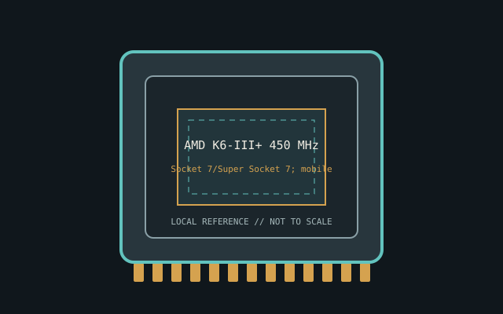

[ INDIVIDUAL CPU COMPONENT ]
AMD K6-III+ 450 MHz
K6-III+ mobile-enhanced x86, 2000; 1C/1T, 450 MHz, 64 KB L1, 256 KB on-die L2 Model-specific record; confirm the complete part marking before installation.

IDENTIFICATION: AMD K6-III+ 450 MHz. Product name alone does not establish package, stepping, voltage or firmware compatibility.
Verified model specifications
| Catalog path | Amd → AMD K5 and K6 families |
|---|---|
| Model and compute | K6-III+ mobile-enhanced x86, 2000; 1C/1T, 450 MHz, 64 KB L1, 256 KB on-die L2 |
| Package / socket | Socket 7/Super Socket 7; mobile variants may be soldered |
| Compatibility | Board BIOS, voltage and multiplier must support mobile part |
| Stepping and variants | K6-III+ differs from K6-III; confirm suffix/OPN |
Compatibility and service
- Board BIOS, voltage and multiplier must support mobile part
- K6-III+ differs from K6-III; confirm suffix/OPN
- Record voltage ID/BIOS; fit isn't proof
- Confirm board manual, exact CPU support list, firmware, voltage/power, memory and cooling before use; never force a package.
Service & archival notes
Record voltage ID/BIOS; fit isn't proof
Photograph package, markings, contacts and date/lot codes before repair. Log host board, BIOS/microcode, memory, cooler, condition, provenance and source revision.
Sources & further reading
- AMD processor specifications — AMD K6-III+ 450 MHzManufacturer catalog; search exact model and OPN.
- AMD support documentationManufacturer platform documents; verify motherboard BIOS separately.
Manufacturer documents take precedence. Family-level references may not resolve every stepping; verify the marking and motherboard CPU list.